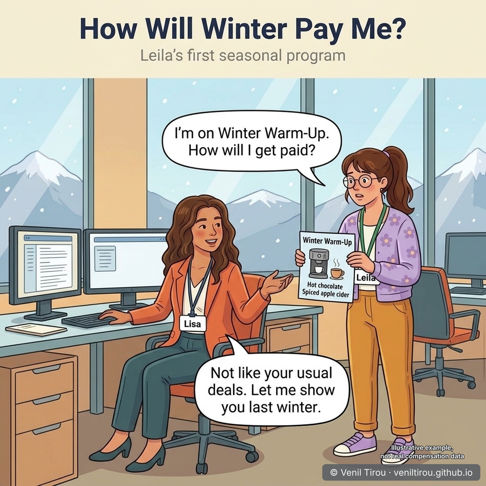
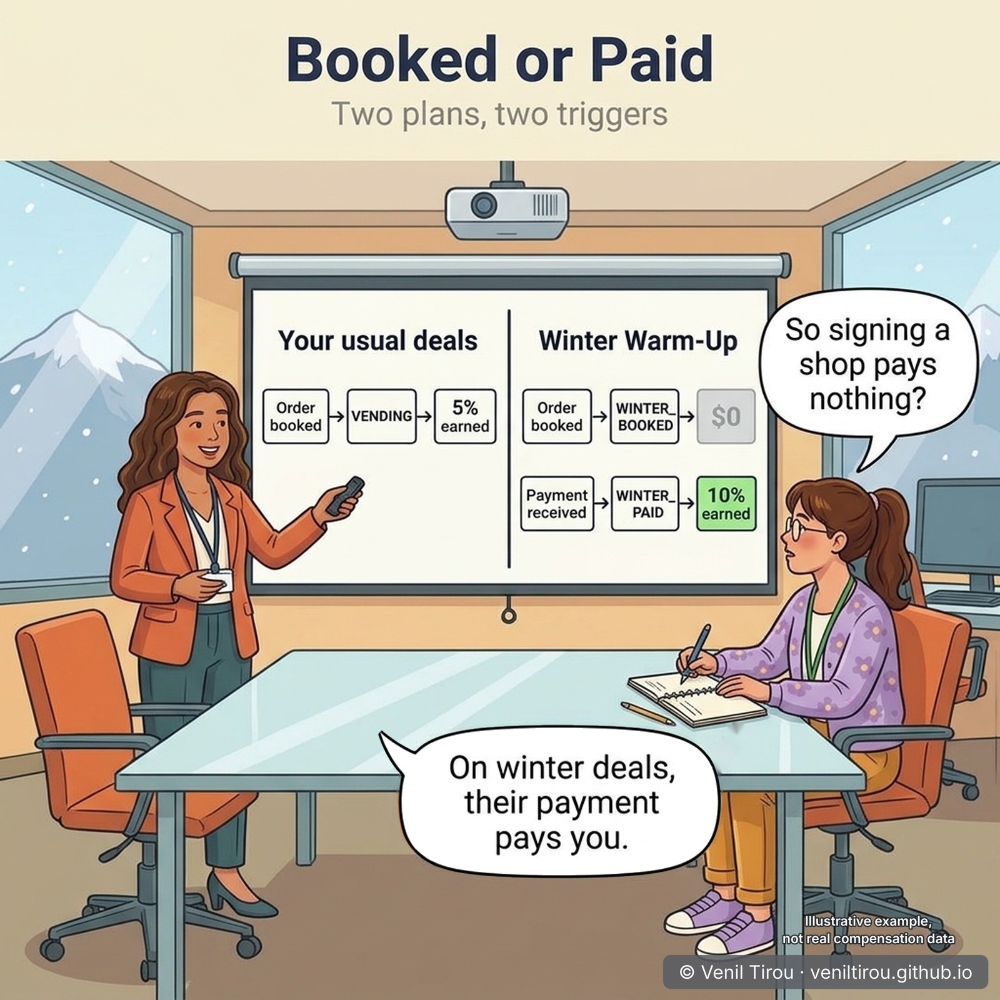
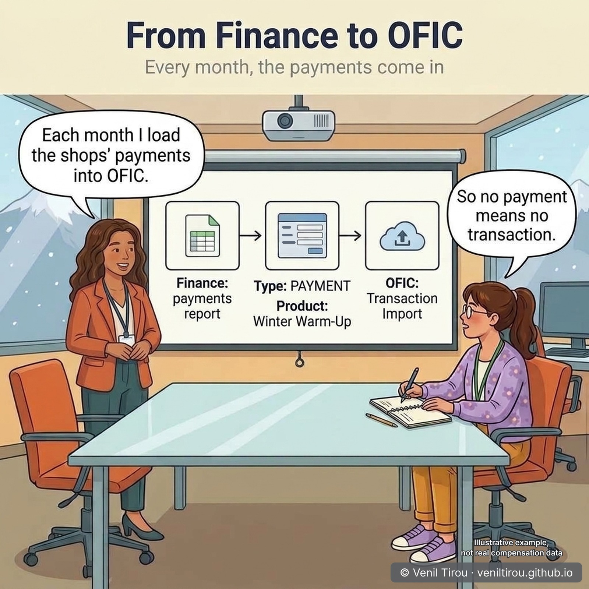
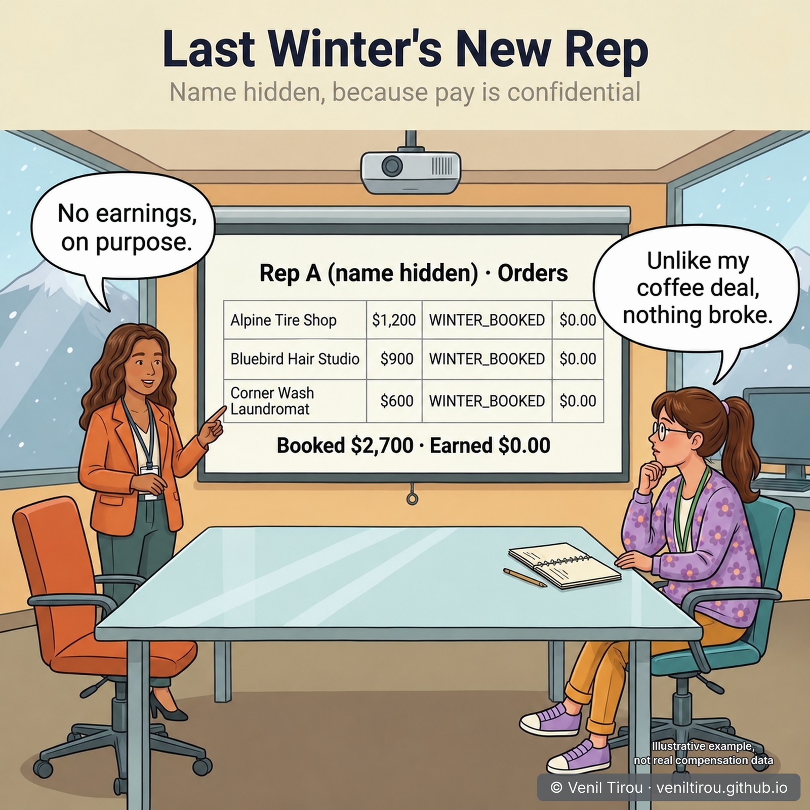
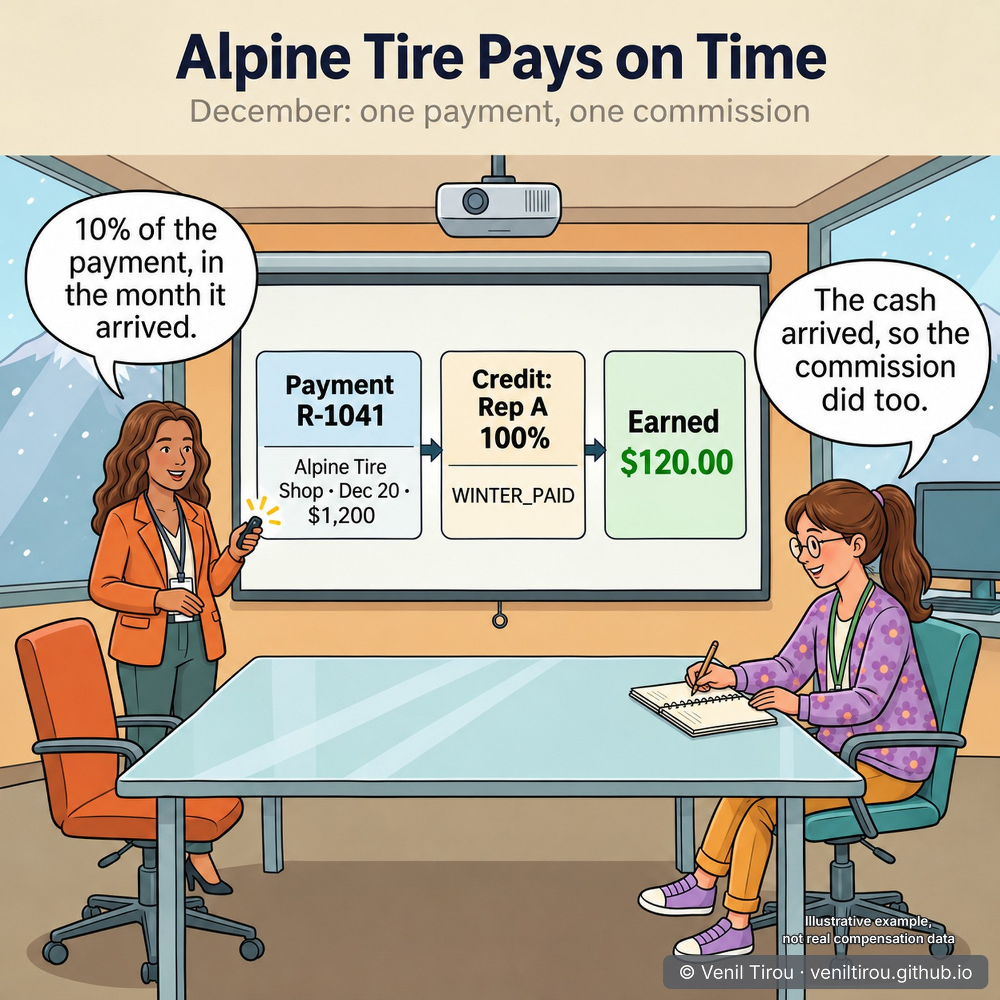
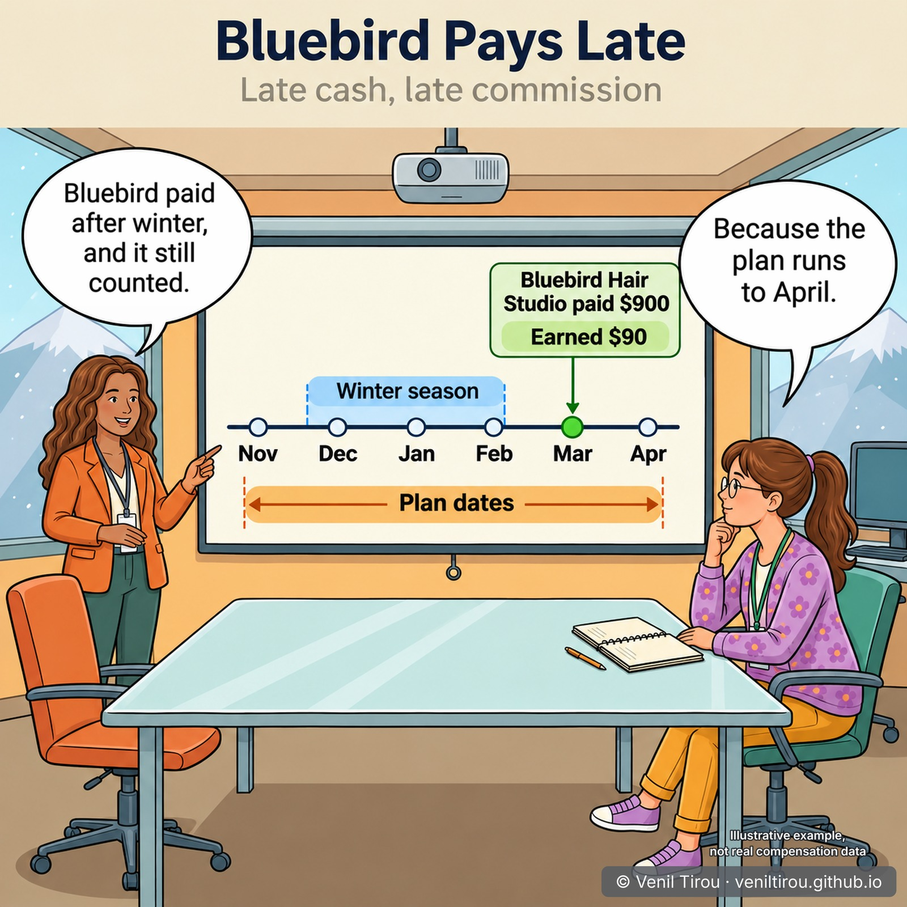
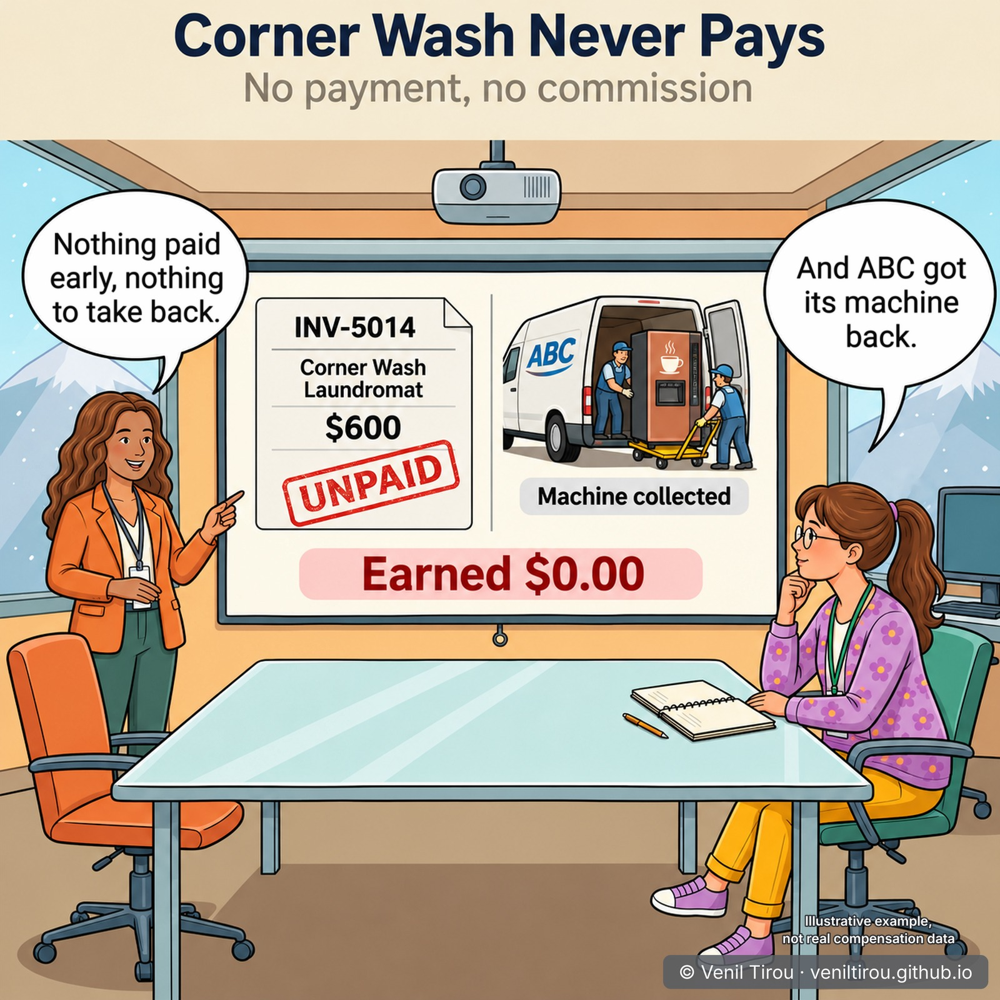
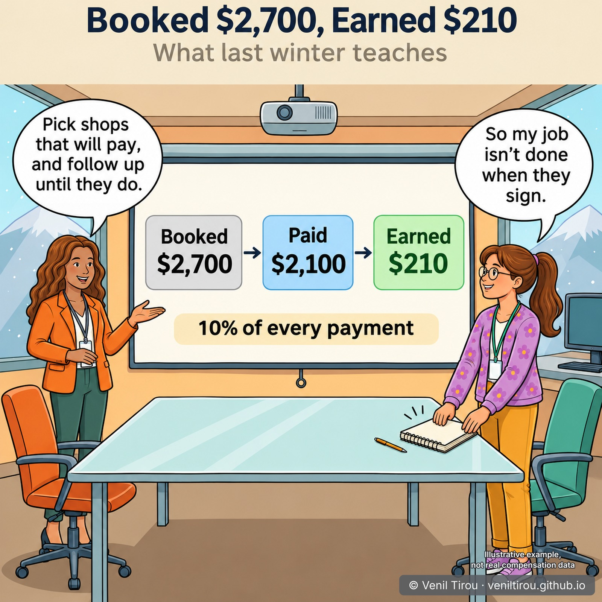

When the Cash Arrives — Paid Only When the Shop Pays
Leila is about to start selling Winter Warm-Up, ABC's seasonal hot-drinks program for small shops. Her usual deals pay when the order is booked. This one pays only when the shop's cash arrives, and nobody can say when that will be. Before she signs anyone, Lisa shows her what that means, using last winter's results for a rep who was new at the time: three shops booked, two paid, one never did. For the booking path, read From Order to Earnings; for paying first and taking back later, read When the Payment Isn't Final.
Because these are small, new customers, ABC pays this program on cash. The Winter Warm-Up Plan pays 10% of every payment, calculated payment by payment, and its dates run from November to the end of April so late cash still counts. Leila's usual Junior Sales Rep Plan still pays 5% on VENDING when an order is booked. Each month ABC's finance team sends Lisa, the compensation analyst, a report of the payments applied to invoices, and she loads the program shops' payments into Oracle Fusion Incentive Compensation as PAYMENT transactions.
👥 Characters in This Chapter
Lisa (ORANGE blazer) — Compensation Analyst at ABC Corporation; she walks Leila through last winter's resultsLeila (FLORAL cardigan, glasses) — junior sales rep about to start on Winter Warm-Up
📱 On mobile? Pinch to zoom to read the numbers clearly.
Prologue — How Will Winter Pay Me?

Scene 1 — Booked or Paid

Scene 2 — From Finance to OFIC

Scene 3 — Last Winter's New Rep

Scene 4 — Alpine Tire Pays on Time

Scene 5 — Bluebird Pays Late

Scene 6 — Corner Wash Never Pays

Scene 7 — Booked $2,700, Earned $210

The Setup Behind It — All in OFIC
There is no "pay on cash" switch. The plan pays on cash because payments are what feed its only category.
| # | Where | Setting |
|---|---|---|
| 1 | Configure Tables and Columns | Enable Transaction Type for classification rules |
| 2 | Manage Credit Categories | WINTER_BOOKED and WINTER_PAID, both top-level, outside VENDING |
| 3 | Classification rules, then Deploy Classification Rules | Winter Warm-Up + PAYMENT → WINTER_PAID; Winter Warm-Up + ORDER → WINTER_BOOKED |
| 4 | Manage Direct Credit Rules, then Deploy Credit Rules | Customer = each shop → the rep, 100% |
| 5 | Compensation Plans work area | Winter Warm-Up Plan: one plan component calculated Per Event; one measure counting WINTER_PAID; a one-tier rate table at 10%; dates Nov 1 to Apr 30; assigned to the rep; then Deploy Compensation Plans |
| 6 | Credits and Earnings: Incentive Compensation Transaction Import, every month | One row per payment: PAYMENT, Winter Warm-Up, receipt number, date applied, amount applied. Then Run All Transaction Processes and Calculate Incentive Earnings |
Sources (Oracle): Import ERP Transactions, Import Transactions for Incentive Compensation, How do I import incentive transaction data?, How Qualifying Criteria Work With a Rule Hierarchy, Best Practices for Configuring Compensation Plans.
Why This Chapter Matters
The takeaway: in OFIC, when a rep is paid depends on which transactions feed the plan. Feed it payments, give them their own category, and let only that category earn. The order still arrives, credited and visible, and earns nothing by design.
Paying on cash suits a program like Winter Warm-Up: small, new customers, a short season and a machine ABC can take back. It costs the rep time, because commission waits for the customer, and it costs the compensation team a monthly upload until the feed is automated. The lesson for sales ops: decide which event pays before the program launches, and make sure only that event's category earns.
Concepts Covered
| Concept | What it means | Scene |
|---|---|---|
| Booked or paid | A plan can pay when the order is booked or when the customer's cash arrives. The difference is which transactions its measure counts. | 1 |
| A category earns only through a measure | WINTER_BOOKED credits are real and classified, but no plan's measure counts them, so they earn nothing. | 1, 3 |
| PAYMENT transactions | Oracle's predefined transaction type for payments. They come in through the transaction import, because the ERP import brings only orders and invoices. | 2 |
| Incentive Compensation Transaction Import | The compensation team's own import: one row per payment, followed by Run All Transaction Processes. | 2 |
| Classification by transaction type | With Transaction Type enabled as a rule attribute, the same product lands in WINTER_BOOKED as an order and WINTER_PAID as a payment. | 1, 2 |
| Confidential earnings | Reps see only their own earnings, so Lisa hides the example rep's name. | 3 |
| Event date | For a payment, the date the cash was applied. It decides which month pays. | 4, 5 |
| Per Event calculation | Each payment is calculated on its own, so the rep can see which shop's payment paid her. | 4 |
| Plan dates | A credit pays only if a plan is assigned on its event date. Winter Warm-Up's dates run past the season to catch late cash. | 5 |
| No payment, nothing to take back | Paying on cash means nothing is paid early, so nothing has to be recovered. | 6 |